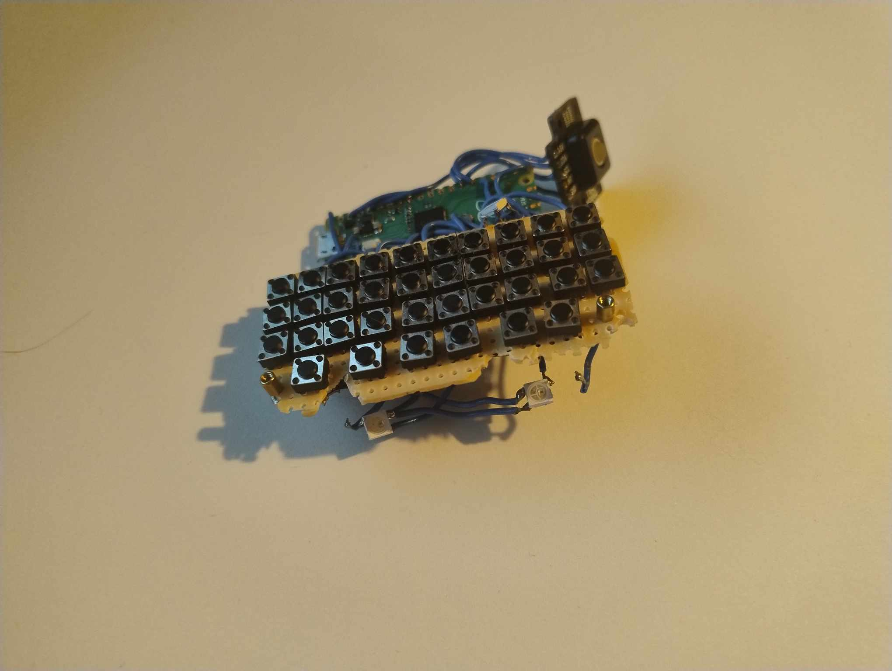
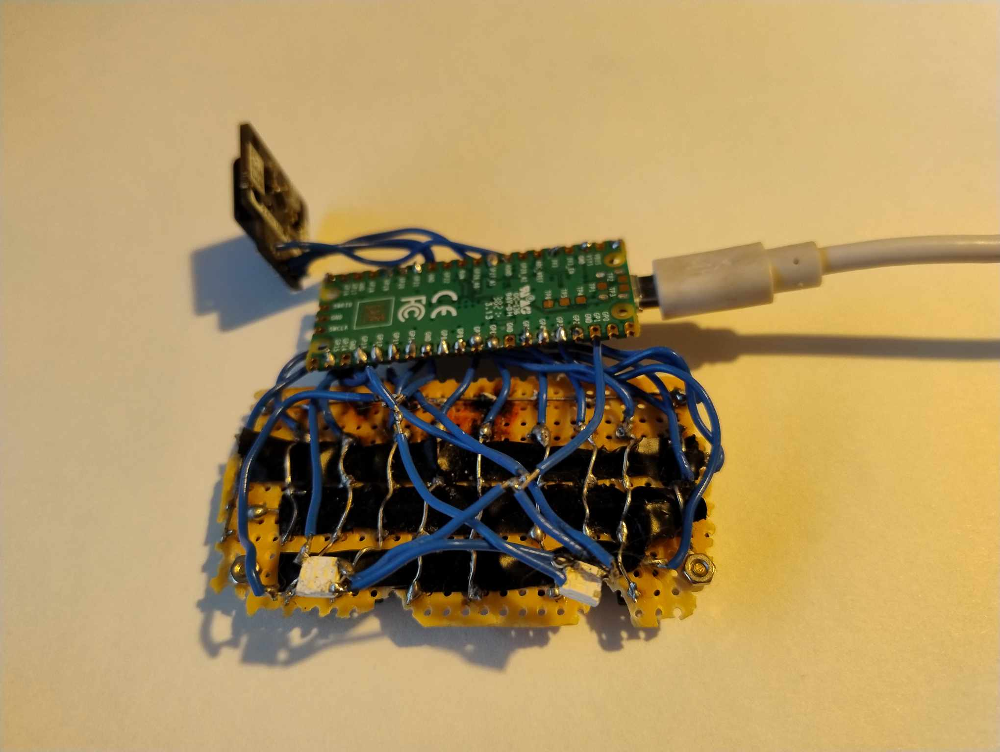
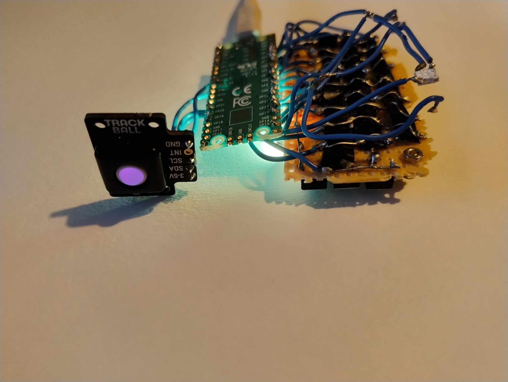

Bethany Davis
Pi Pico Keyboard
What is it?
- This is a USB HID thumb keyboard, running with a Pi Pico, with small tactile buttons, an RGB i2c trackball from pimoroni, and some small neopixel LED lights which I had put in to create under key lighting. It's the second iteration of the device, after some of the soldering on the first
wasn't neat enough, and there were issues with other microcontrollers not working correctly. The code is written in Circuitpython, which was the only language I could find that would function both for HID purposes, and be compatible with the specific trackball I was using, thanks to a library I found
here, and translated from the code created for this guide, which unfortunately only worked in Serial mode, and therefore not as a regular keyboard.
The keyboard as is without any overlay.
- The buttons were laid out specifically in order to fit underneath the keymat from a Blackberry Priv, a phone I was hoping to retrofit a single board computer into. I chose the priv for its portrait slide design, which I find maximises screen space, without making
the device too long to fit pockets comfortably. Also, I just really enjoy the tactile feel of the slide, and I decided if I was building my own phone, I was going to do it my way. Even if it was extremely difficult and took 8 months and counting.
- Additionally, I've always liked under key lighting. With my PC, it's been great for custom keybindings on projects and video games, and with phones, a physical keyboard is much more usable in the dark if it has lighting underneath. While the buttons I've used won't be able to have individual
under key lighting, it's definitely useful. It also helps that the LEDs I picked (Neopixel 5050 RGB) can change colour programmatically, adding a fun touch in tandem with the trackball.
Why I made it
- After becoming disillusioned with how boring a lot of smartphones have become, I decided I would make my own, and hopefully bring back some features I'm missing in modern devices, such as large cameras with fun lenses- like the Samsung S3 Zoom, and a high quality dac with a 3.5mm headphone jack.
While never having owned a Blackberry phone specifically, I did own a keyboard phone, and found that I was able to text far quicker, and more accurately than I ever had on a touch keyboard. Eventually Blackberry died off as a mobile phone company, keyboard phones fell out of mainstream popularity,
and the options available weren't very usable as a daily driver without significant modification. Thinking to myself, "how hard could this possibly be", I read up on the process of building keyboards, and decided that would be a good place to start.
- I was also interested to make it because since I made my mixer back in 2020, I hadn't had many reasons to pick up my soldering iron outside of my headphones , and while I don't remember my soldering being of any great quality, I did miss
doing projects with physical elements, and I've always been curious about electical engineering in general. So while this would be complicated, the guide I was following was actually fairly straightforward - if a little fiddly, and made more difficult by the fact that I chose to scale it down, and
I wasn't going to be doing this for commercial purposes, so there was less pressure.
- Finally, at this point in my career, a lot of my projects had either been small games I'd made on my own, or features as part of my professional work. The work I had planned on the keyboard would be much more self contained, and require an entirely different
approach to programming, with the microcontroller having limited storage and processing ability. Also, at this point I hadn’t touched python in a while outside of occasional revisits to old code; so while I was hoping for a copy and paste solution in the guide, once it proved to only work in serial,
I had to make some changes, and the thought of adding features the original didn’t have was appealing.
How did it go?
- It's a keyboard that I can plug into a computer and type with (or use the mouse with), so arguably, a complete success. I'm not 100% happy with the wiring on the lighting, and the LEDs themselves proved too large to sit between the keys, so I'm currently trying to figure out how to evenly
light up the keymat. My current thinking is the same film they use to distribute the LED lighting inside Ultrasabers custom lightsabers, but that aside, the lights themselves have worked previously- the code works, I just want to redo the wiring- so even that side of things was a success. It
is however, fairly basic. There's a lot of standard mouse/keyboard functionality that doesn't exist- I'm limited to what's on the priv keymat after all. Also, there are elements of functionality I'm still hoping to add that I haven't had time to work on. Being able to control the lighting from
the host device for example through an app that can talk to the device would be my first port of call. Additionally, the controls on the trackball are fairly basic, and lack any sort of smoothing or acceleration. This is fine on a smaller screen (which the keyboard will be embedded in), but it
has made testing a pain, and it's a convenience that if I could add, would add a lot.
Questionable wiring on the back of the perf board, with extremely professional insulation tape to prevent shorting.
- One surprising result of this however was in my code's subsequent reuse. Initially, while having difficulties with some of the code, and trying to figure out if the output was expected or not, I'd started messaging the author of the guide. Once we'd gotten talking,
and somewhat collaborating -I made his code work as an HID device by translating it to circuitpython, he fixed an issue I had with keys in columns not being able to be pressed at the same time, due to the key and row pins being set the wrong way round with pull up/pull down values- it turned
out that the transition to HID had made his device usable in an exhibition he was working on over at Bletchley Park Computer Museum (specifically, a nuclear reactor simulator), so while I've never met him, been to Bletchley park museum, or been able to fully see it in action, I can now say I've
contributed to a museum piece by accident, and to be even a footnote on the computing tradition at Bletchley Park has to be one of my greatest achievements.
What's next?
- As mentioned previously, I'm hoping to start work on controller apps (hopefully one unified app) for the host device, so I can control the RGB lighting, and make changes to how the trackball functions. This will be a fair amount of work, because I'd never worked with microcontrollers
in the first place, and there's no small amount of anxiety involved in trying to make changes to a machine that currently works basically as intended (I have another Pi Pico set up, so the anxiety is mostly dealt with). Once I've done that though, I want to make the code properly
available on github, and document it well for extension, as it has already proven to be useful to other people. Potentially as well, I may make another iteration of the device, this time, either for a custom keymat, or with smaller buttons, and more provisioning for backlighting. Lastly,
I want to add a vibration motor. I've always been a proponent of haptics in mobile devices, and so far, the pico has proven to be easy enough to just stick things onto as long as they're properly documented.
Some of the lighting in action, the trackball is lit purple, and one of the LEDs is on